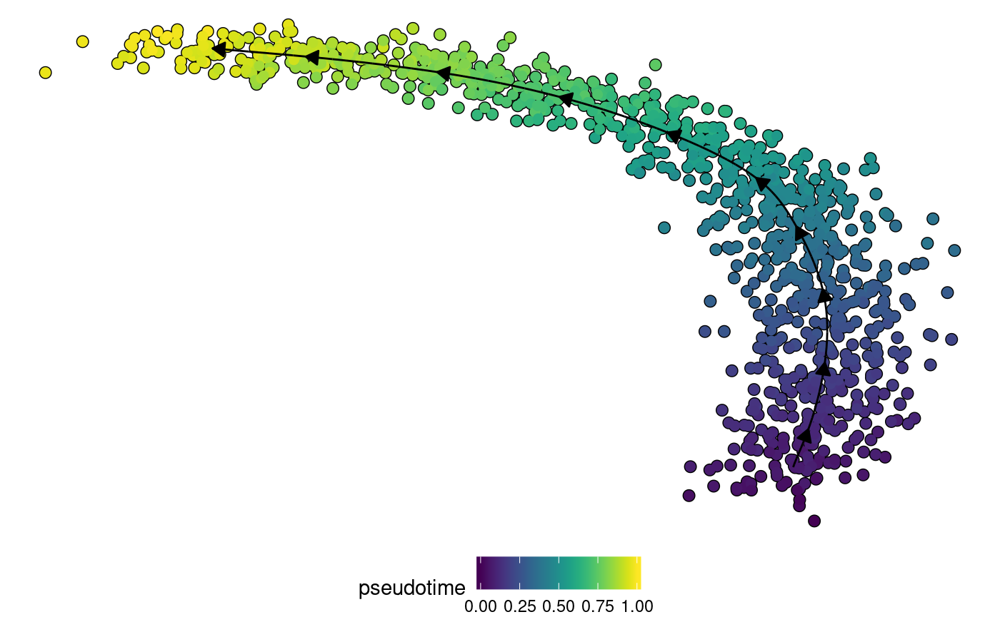

Adding a new TI method
2018-05-30
add_new_ti_method.RmdThis vignette describes how to include your own method into the dynverse workflow. We’ll illustrate this with a very basic method: using one of the components of a PCA as the pseudotimes.
There are two main ways to add a new method:
- Directly within R. In this case you create an R function or R packages. The user will have to install all dependencies. This is th use case described here.
- Using a docker. In this case you create a docker which uses some input files (eg. a file containing the expression) and returns some output files. This use case is described in a separate vignette.
The main function to create a new ti method is create_ti_method. This wraps:
- The name of the method
- The main function to run a method on a dataset
- The parameters required by a method, and their ranges
Input
To test our method, we will use a very simple toy data example.
library(dynwrap)
library(dynmethods)
library(tidyverse)
library(ParamHelpers)The main function will receive three different types of input parameters: the expression data, extra parameters and prior information.
Expression data
The The raw counts or normalised expression. This is a matrix with in the columns different features (genes) and in the rows different cells.
ncells <- 1000
pseudotimes <- runif(ncells)
expression <- matrix(
c(
(pseudotimes - 0.5) ** 2,
sqrt(pseudotimes + 20),
pseudotimes
),
ncol = 3,
dimnames = list(as.character(rep(seq_len(ncells))), as.character(c("A", "B", "C")))
)
expression <- expression + rnorm(length(expression), sd = 0.02)In this example, we’ll use the expression data as follows:
pca <- prcomp(expression)Parameters
The main function can accept any additional parameters, which should also be defined in a parameter set using the ParamHelpers package. This allows you to specify the type of parameter (integer, numeric, discrete, logical, …), the possible range of values and the default value.
In this example we’ll define one parameter, the component:
par_set <- makeParamSet(
makeIntegerParam("component", lower = 1, upper = 10, default = 1)
)component <- 1
pseudotimes <- pca$x[, component]
pseudotimes <- (pseudotimes - min(pseudotimes)) / (max(pseudotimes) - min(pseudotimes))Prior information
Prior information can be required (no default) or optional (default is NULL).
Following prior information requests are possible:
| Name of parameter | Description |
|---|---|
| start_id | Vector containing ids of the start cells |
| end_id | Vector containing ids of the end cells |
| end_n | The number of end states |
| start_n | The number of start states |
| states_id | Named character vector linking the cell ids to different states or clustering |
| states_n | Vector containing the number of end states (including start, end and intermediary states) |
| states_network | Dataframe containing the known network between states. Contains a from and to column |
| time_id | Named numeric vector linking the cell ids to time points |
| genes_id | Character vector with genes known to be important in the dynamic process |
In this example we will use the start_cells…
start_cells <- as.character(which.min(pseudotimes))as follows
if (!is.null(start_cells)) {
if(mean(pseudotimes[start_cells]) > 0.5) {
pseudotimes <- 1-pseudotimes
}
}Output
In the end, the output of the method should be transformed into the common trajectory format:
[Figure of common output model]
The topology of the trajectory requires:
-
milestone_idsThe ids of the milestones in the trajectory. Type: Character vector. -
milestone_networkThe network of the milestones. Is a dataframe with columns from, to, length and whether it is directed -
divergence_regionsA data frame specifying the divergence regions between milestones (e.g. a bifurcation). Is a dataframe containing a divergence_id, milestone_id, and is_start (TRUE when this milestone is the start of this divergence
milestone_ids <- c("A", "B")
milestone_network <- tibble(from = "A", to = "B", length = 1, directed = TRUE)
divergence_regions <- tibble()The location of the cells can be provided in two ways:
-
milestone_percentagesA data frame specifying what percentage milestone each cell consists of. Is a dataframe with columns cell_id, milestone_id, and percentage -
progressionsSpecifies the progression of a cell along a transition in the milestone_network. Is a dataframe with columns cell_id, from, to, and percentage
Example of milestone_percentages:
milestone_percentages <- bind_rows(
tibble(
milestone_id = "A",
cell_id = names(pseudotimes),
percentage = 1-pseudotimes
),
tibble(
milestone_id = "B",
cell_id = names(pseudotimes),
percentage = pseudotimes
)
)Example of progressions:
progressions <- tibble(
cell_id = names(pseudotimes),
from = "A",
to = "B",
percentage = pseudotimes
)We can now wrap this information up:
trajectory <-
wrap_data(
cell_id = names(pseudotimes)
) %>%
add_trajectory(
milestone_ids = milestone_ids,
milestone_network = milestone_network,
divergence_regions = divergence_regions,
progressions = progressions # either milestone_percentages or progressions have to be provided
)In some cases, we already provide functions which do the calculation of milestone_percentages or progressions. For example, when a method returns only a linear trajectory with pseudotimes:
trajectory <-
wrap_data(
cell_ids = names(pseudotimes)
) %>%
add_linear_trajectory(pseudotimes)Other examples include:
[Figure of common wrapping methods]
We can plot this output using the plotting functions provided by the dynplot package:
dynplot::plot_dimred(trajectory, "pseudotime", expression_source = expression)## Pseudotime not provided, will calculate pseudotime from root milestone## root cell or milestone not provided, trying first outgoing milestone_id## Using 'milestone_start' as root
Creating the method object
Combining everything in a function:
run_fun <- function(expression, component, start_cells = NULL) {
# do pca and extract pseudotimes
pca <- prcomp(expression)
pseudotimes <- pca$x[, component]
# flip pseudotimes using start_cells
if (!is.null(start_cells)) {
if(mean(pseudotimes[start_cells]) > 0.5) {
pseudotimes <- 1-pseudotimes
}
}
# convert to common format
wrap_data(
cell_ids = names(pseudotimes)
) %>%
add_linear_trajectory(pseudotimes)
}We can now create the TI object
ti_dummy <- create_ti_method(
"dummy",
par_set,
run_fun
)This function also has several optional parameters, among which:
- R packages which have to be installed, and R packages which have to be installed and loaded
- The function to plot the output of a method, default is
dynplot::plot_default - A short name of the method
Running the method
Running the method is easy given a task.
task <- wrap_data("", rownames(expression)) %>% add_expression(expression, expression)
model <- infer_trajectory(task, ti_dummy())library(dynplot)
dynplot::plot_dimred(model, color_cells = "pseudotime" , expression_source = task$expression)## Pseudotime not provided, will calculate pseudotime from root milestone## root cell or milestone not provided, trying first outgoing milestone_id## Using 'milestone_start' as root